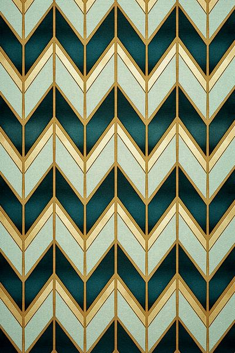

Ngôn Ngữ Thẩm Mỹ
Art Deco có thể dễ dàng nhận ra qua các yếu tố hình học táo bạo, sự cân đối chính xác và vật liệu sang trọng

Hình Học & Đối Xứng
- ✦ Hình dạng hình học: tam giác, zigzag, chevron
- ✦ Hình thang, nan quạt
- ✦ Bố cục cân đối và đường nét đối xứng
- ✦ Tạo cảm giác hài hoà và sang trọng

Chất Liệu & Màu Sắc Cao Cấp
- ✦ Kim loại: nhôm, chrome, thép không gỉ
- ✦ Đá hoa cương, gỗ mun, da cá mập
- ✦ Phối màu tương phản: đen – vàng kim
- ✦ Hiệu ứng bóng sang trọng

Tính Quốc Tế & Đa Văn Hóa
- ✦ Phong cách toàn cầu
- ✦ Kiến trúc, nội thất, thời trang
- ✦ Đồ trang sức, ô tô, poster
- ✦ Phản ánh đặc thù địa phương